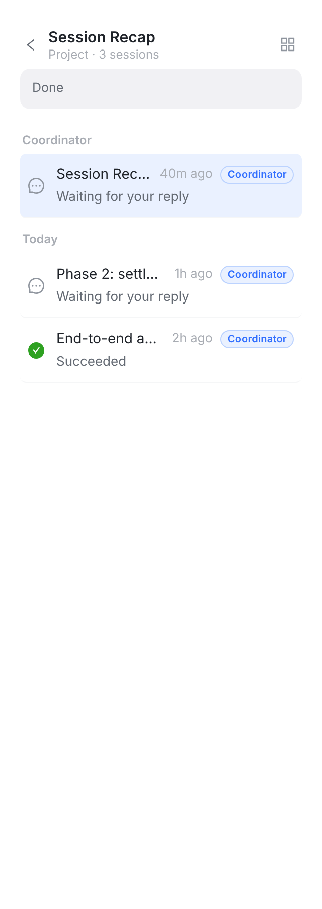
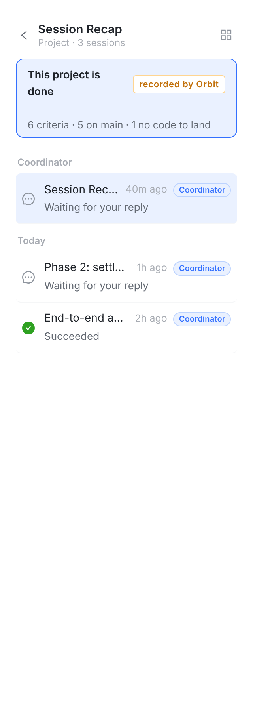

这张图不是手画的：这一版代码跑起真的 Web 控制台（vite + 仓库自带的假 API），按你项目的样子喂了一个 DONE 的项目、六个判据（5 条 on main、1 条 no code to land），把项目会话栏原样截下来。左边是「读里没有投影的 counts」——旧服务器——进度卡照旧写一个 Done；右边是正常读法，顶部第一张卡就是结束卡。
（会话行里的 Coordinator 徽标和 “Waiting for your reply” 是假数据填得糙，不是这一页的改动。）

keeps the progress card when the projection carries no unified counts）。